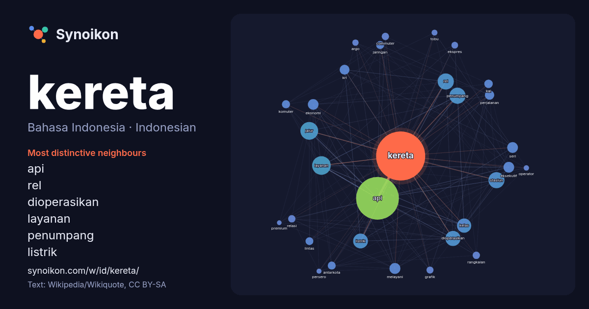

Bahasa Indonesia · Indonesian · word of the day list
kereta
“train” · The words found around it in 1742 instances from Indonesian Wikipedia, Wikiquote.

Most distinctive neighbours
- api 226×
- rel 108×
- dioperasikan 97×
- layanan 80×
- penumpang 68×
- listrik 58×
- krl 54×
- eksekutif 50×
- jalur 48×
- kai 44×
- melayani 43×
- komuter 42×
- stasiun 41×
- antarkota 40×
- commuter 37×
- kelas 37×
- relasi 33×
- ekspres 30×
- grafik 30×
- argo 28×
× = how many times more often than in general Indonesian Wikipedia text.
Most frequent neighbours
- api 1324
- layanan 251
- jalur 229
- penumpang 189
- rel 188
- stasiun 185
- dioperasikan 166
- indonesia 161
- listrik 158
- kelas 147
- melayani 86
- eksekutif 83
- seri 83
- ekonomi 82
- krl 70
- perjalanan 64
- jenis 63
- kai 52
- komuter 48
- jaringan 47
In context
- Kereta adalah alat transportasi yang digunakan untuk mengangkut barang atau orang. Kereta digunakan untuk mengangkut barang, hasil pertanian atau kadang-kadang Wikipedia snippets · Kereta
- PT Kereta Api Indonesia (Persero), atau biasa disingkat menjadi KAI, adalah operator kereta api milik negara utama di Indonesia. KAI menyediakan layanan Wikipedia snippets · Kereta Api Indonesia
- kereta api utama, yakni Stasiun Bandung dan Stasiun Kiaracondong. Selain kereta api lokal, Stasiun Bandung dipergunakan sebagai stasiun ujung kereta api Wikipedia snippets · Kota Bandung
- Kereta api Muria adalah layanan kereta api penumpang kelas eksekutif yang dioperasikan Kereta Api Indonesia untuk melayani relasi Semarang Tawang–Gambir Wikipedia snippets · Kereta api Muria
- barang. Kereta api biasanya ditarik atau didorong oleh lokomotif, meskipun ada pula yang dapat digerakkan sendiri, seperti kereta rel atau kereta api berpenggerak Wikipedia snippets · Kereta api
- Kereta api Argo Semeru merupakan layanan kereta api penumpang kelas eksekutif dan compartment suite yang dioperasikan oleh Kereta Api Indonesia melayani Wikipedia snippets · Kereta api Argo Semeru
- digabungkan menjadi kereta yang lebih panjang. Operasi ini dilakukan oleh perusahaan kereta api, yang menyelenggarakan operasi antara stasiun kereta api penumpang Wikipedia snippets · Transportasi rel
- Tabrakan kereta api Bekasi Timur 2026 merupakan serangkaian peristiwa tabrakan kereta api yang terjadi pada 27 April 2026 pukul 20.48 dan 20.52 WIB di Wikipedia snippets · Tabrakan kereta api Bekasi Timur 2026
More Indonesian words
- air
- anjing
- bahasa
- emas
- iklim
- jantung
- jembatan
- kebenaran
- kehidupan
- kekuasaan
- keluarga
- kematian
- kerja
- kesehatan
- kesenian
- kucing
- lingkungan
- makanan
- sains
- sejarah
- tuhan
- uang
Precomputed on 2026-10-09 with default settings (±5 words, medium corpus). The interactive map can refresh it with live data.